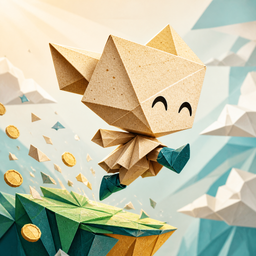

قفزة ورقية
اقفز بين عوالم من ورق.
أهلًا بك في صفحة دعم «قفزة ورقية». هنا أجوبة الأسئلة الشائعة، وإن لم تجد جوابك فراسلنا.
راسلنا: alotaibi3@outlook.sa
سؤال أو مشكلة أو اقتراح، نقرأ كل رسالة. اذكر نوع جوالك وماذا حدث.
سؤال أو مشكلة أو اقتراح، نقرأ كل رسالة. اذكر نوع جوالك وماذا حدث.
كيف ألعب؟
المس الشاشة ليقفز ساعي البريد، والمس مرة ثانية وهو في الهواء لقفزة مزدوجة. اهبط في وسط المنصة لتربح عملات أكثر.
هل تحتاج اللعبة إنترنت؟
لا. تستطيع اللعب في أي مكان، حتى في الطائرة.
كيف أوقف الموسيقى أو الصوت أو الاهتزاز؟
من الشاشة الرئيسية افتح «الإعدادات»، وفيها مفتاح لكل واحد منها، واختيار اللغة أيضًا.
غيّرت جوالي، هل ينتقل تقدمي؟
التقدم محفوظ على الجهاز. إن نقلت جوالك كاملًا بنسخة iCloud أو بالكمبيوتر، فقد ينتقل التقدم معه. أما إن حذفت اللعبة فيُحذف التقدم.